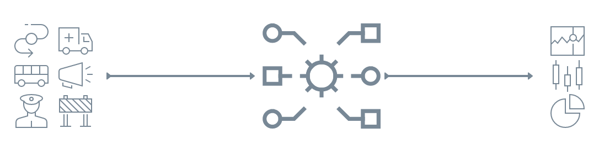
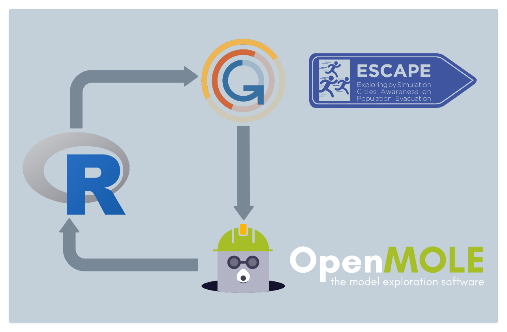

Sujet
Développe
Contexte
L’évacuation partielle ou totale d’un territoire peut être la principale mesure de protection des populations contre une menace, qu’elle soit naturelle comme un cyclone, ou technologique comme l’incendie d’un site industriel. Les risques liés à un déplacement de population dans un contexte de stress et dans un environnement potentiellement dégradé sont cependant élevés : accident, embouteillage, désordre public, désorganisation de la sécurité civile, exposition accrue au danger, etc. Et ces risques augmentent avec les densités de population et la complexité des infrastructures urbaines. La préparation est donc fondamentale et même obligatoire en France pour les communes soumises à un danger.
Le projet ESCAPE est constitué d’un couplage entre systèmes d’information géographiques (SIG), modélisation multi-échelle à base d’agents et méthodes d’explorations de simulation. Celles-ci permettent d’explorer des questions scientifiques difficilement abordables par l’observation in situ et permettent dans un second temps de tester ou d’explorer différentes stratégies d’évacuation en collaboration avec des acteurs de gestion de crises. À partir d’informations géographiques, démographiques et d’un simulateur de comportements de mobilité nous établissons des diagnostics relatifs au temps d’évacuation et identifions les contraintes locales de ces évacuations. Ce travail passe par l’exploration à différentes échelles de l’émergence de comportements collectifs qui sont potentiellement perturbateurs de l’évacuation et par l’analyse des solutions envisageables pour limiter leur impact sur la dynamique de l’évacuation. Le développement de démonstrateurs permet d’identifier les enjeux présents dans chaque cas d’étude.
Cet outil d’aide à la prise de décision a été dévelopé pour être générique et transposable à tout type de risque, naturel comme anthropique. Un ensemble de 4 démonstrateurs ont donc été élaboré:
Saumur (Risque d’Inondation)
Rouen (Risque technologique)
Guadeloupe (Risque volcanique)
Hanoi (Risque d’’inondation)
Le système ESCAPE, à travers les divers démonstrateurs, produit un volume de données assez conséquent. Les mesures issues de ces simulations doivent explorer et analyser via une chaîne de traitements statistiques ou spatiale automatisé qui alimentera une application web de visualisation interactive (sous R-Shiny par exemple).
Description du poste
Les principales missions sont les suivantes :
Explorer et analyser les bases de données produites par les démonstrateurs de Rouen et Saumur (Risque technologiue et d’inondation).
Elaborer des fiches méthodologiques sur les d'indicateurs développés et les métadonnées associées aux données produites
Intégrer de nouveaux indiciteurs aux sorties statistiques déjà existantes.
Factoriser la chaîne de traitements.
Profil
Vous êtes en Master Géomatique ou en d'école d’ingénieur(e)s, spécialisé(e) en Géomatique ou Data Science.
Vous disposez de compétences statistiques et pour l’analyse de données. Vous possédez des capacités de synthèse et un intérêt pour la thématique des risques.
Vous avez une bonne maîtrise de R et une appétence pour la programmation vous permettant de développer en autonomie.
Une connaissance de logiciel de de gestion de versions décentralisé (GIT), et du système Linux.
Vous êtes curieux.se, vous aimez travailler en équipe et vous savez programmer de manière rigoureuse.
